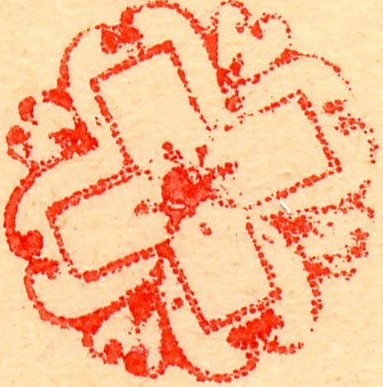

Schweiz - Suisse - Svizzera - Zwitzerland
Return To Catalogue - Switzerland
Note: on my website many of the
pictures can not be seen! They are of course present in the
catalogue;
contact me if you want to purchase the catalogue.
Switzerland seems to have been one of the favourite countries of the famous stamp forger Francois Fournier. I will here present the pages of the Fournier Album of Philatelic Forgeries. Click here for Switzerland Fournier forged stamps.
Some forged Fournier cancels as they can be found in the 'Fournier Album of Philatelic Forgeries':
In the upper row are shown: two Rosette cancels
of Geneva, the Geneva grill cancel, a phantasy dot cancel, a
grill cancel, a 'Eidgenossige Raute' or federal grill cancel, a
Geneva grill cancel and a St.Gallen 'St.G' lozenge cancel.
The 'Chargé' on the second row is a cancel from the
town of Courtelary (Cortaillod). The three ring cancel (also on
the second row) is supposed to be a 'Biel Dreikreis' cancel.
The third row shows two 'FRANCO' cancels, the first on is from
Basel, the second one from Chur. The bird cancel is from an
unknown town folllowed by several 'P.D' cancels.

Note that the cancel consists of small dots, however, I don't see
these dots on the cancels used on the Fournier forgeries.


Zoom-in of several cancels
Some of the cancels Fournier used are:
'CHENE 3 MARS 50 MATIN'
'GENEVE 23 MAI 50 2 S'
'GENEVE 23 DECE 49 8 1/2 M'
'GENEVE 12 JUIL 51 2 S'
'GENEVE 20 OCT 43 +'
'GENEVE 12 AOUT 50 3 S'
'GENEVE 15 FEVR 47'
'GENEVE 14 DEC 43 +'
'GENEVE 6 MAI 46'
'LENZBURG 15 VII 67 I' on forged 1864 stamps
'NYON 6 AOUT 54 2S' in red on 1 F grey 1854 issue
'ZURICH N M 5/8 45'
'ZURICH N M 1/5 46'

Probably a Fournier forgery with a cancel 'BADEN II 25 OCTO 1850'
in a double circle with posthorn at the bottom placed beside it,
identical to the one found in the Fournier Album as shown above,
all on a piece of paper.

Fournier(?) forgery with federal grill cancel and 'GENEVE 26 MARS
51 2 S' cancel placed besides it, all on a piece of paper. The
cancel is identical to one of the cancels shown above.
{kind=link}